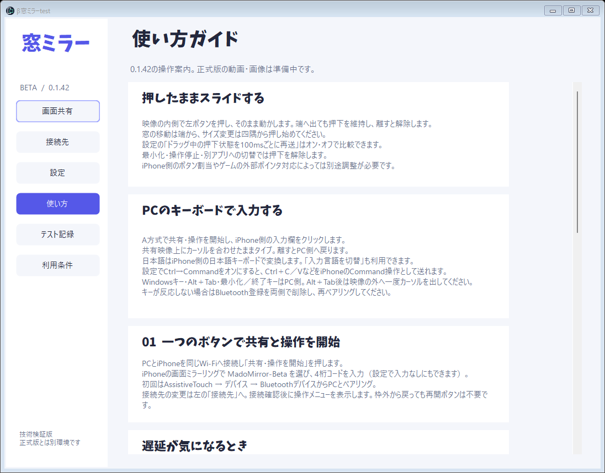
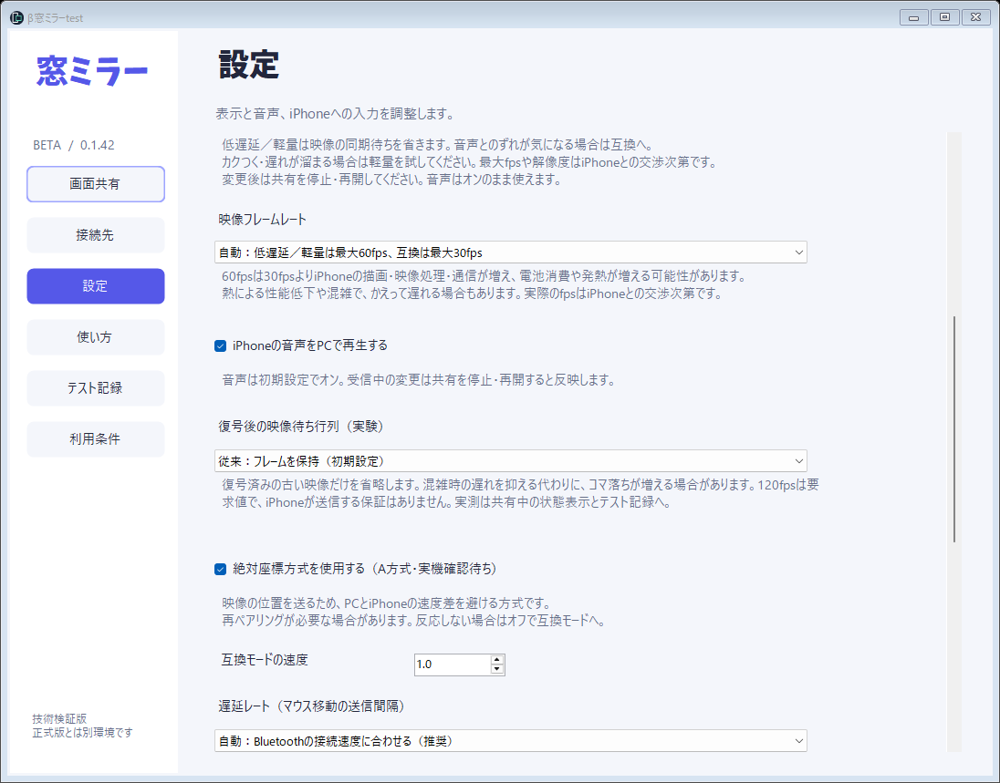

できること
PCで作業しながら、iPhoneを横の小窓で使えます。
画面と音声を小窓に
同じWi-Fiにつないで、iPhoneの画面ミラーリングからPCへ。iPhoneの音声もPCで再生できます。
マウスで操作
PCがBluetoothの入力機器としてiPhoneにつながります。クリック、長押しドラッグ、スクロール、ホームまで手元のマウスで。
PCのキーボードで入力
映像の上にカーソルを置けば、キー入力はiPhoneへ。日本語はiPhone側で変換。Ctrl＋C／VをCommandとして送る設定もあります。
じゃまにならない小窓
端をつかんで移動、四隅でサイズ変更。最小化しても接続はそのまま保ちます。
遅延に合わせて調整
低遅延・軽量・互換の表示モード、最大60fpsのフレームレート、マウス送信間隔を設定から選べます。
入力内容を保存しない
キーボード転送は押されているキーの状態だけをメモリで扱い、文字列やキー履歴をファイルに残しません。
はじめかた
必要なのは、Bluetoothが使えるWindows PCとiPhone、同じWi-Fiだけです。
インストール
セットアップファイルを実行します。デスクトップとスタートメニューに「β窓ミラーtest」が追加されます。
画面を共有
PCとiPhoneを同じWi-Fiにつなぎ、「共有・操作を開始」を押します。iPhoneの画面ミラーリングで MadoMirror-Beta を選び、表示された4桁コードを入力します。
操作をつなぐ（初回のみ）
iPhoneの「AssistiveTouch → デバイス → Bluetoothデバイス」からPCとペアリングします。以降はマウスとキーボードで操作できます。


ダウンロード
アプリの配布は準備中です。公開するバージョンと配布ファイルを確認後、ダウンロードを開始します。
窓ミラー β 0.1.42
Windows用インストーラー
配布準備中です。以下の機能説明はβ版0.1.42時点のものです。
- 開発中の技術検証版です。動作は保証されません。
- 0.1.42の長押しドラッグ改善や絶対座標入力など、一部はiPhone実機での確認前です。
- 正式版とは別のアプリとしてインストールされます。
0.1.42 の変更点
- 映像の内側から始めた長押しドラッグを、端やウィンドウ外まで継続
- 押下状態を100msごとに再送する互換設定を追加（初期オン）
- 最小化・別アプリへの切替・操作停止で押下を確実に解除
「WindowsによってPCが保護されました」と出たら
- 警告が表示された場合は実行を止め、配布元とファイルを確認してください。チェックサムの一致はファイルの同一性を確認するもので、安全性を保証するものではありません。
よくある質問
iPhoneにアプリを入れる必要はありますか？
いいえ。映像はiPhone標準の画面ミラーリング、操作はiPhone標準のBluetoothポインタ・キーボード機能を使います。
日本語は入力できますか？
はい。iPhoneに日本語キーボードを追加し、アプリの「入力言語を切替」で切り替えてからローマ字で入力します。変換はiPhone側で行います（PCのIMEで確定した文字を送る機能ではありません）。
マウスやキーボードが反応しません
iPhone側で入力欄が選ばれているか確認してください。直らない場合は、iPhoneとPCの両方でBluetoothの登録を削除してから、もう一度ペアリングしてください。
映像が遅れる・カクつきます
設定の表示モードで「軽量」を試すか、フレームレートを下げてください。音声とのずれが気になる場合は「互換」がおすすめです。変更後は共有を停止して再開してください。
記号の位置がずれます
iPhoneの「設定 → 一般 → キーボード → ハードウェアキーボード」で、配列をお使いのPCキーボード（JIS／US）に合わせてください。
MacやAndroidでも使えますか？
現在はWindows PCとiPhoneの組み合わせのみ対応しています。
ライセンス
窓ミラーは以下のオープンソースソフトウェアを利用しています。再配布する場合は、対応するソースコード一式と各ライセンスを添付してください。
| アプリのUI・ビルドスクリプト | MIT License |
| UxPlay（映像受信エンジン） | GNU GPL v3 以降 |
| GStreamer ほか | 各ライセンス（同梱の licenses フォルダー） |
| けいふぉんと | Apache License 2.0（配布元） |
iPhone は Apple Inc. の商標です。窓ミラーは Apple Inc. とは関係のない個人開発のアプリです。